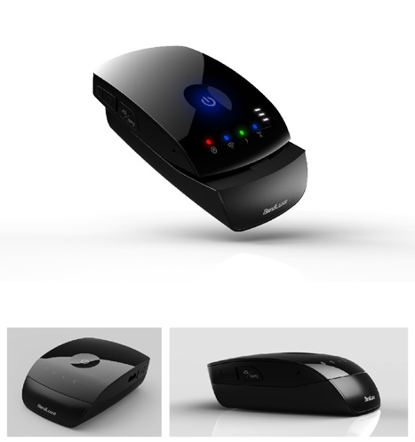

Bandrich wins 2013 iF Product Design Award for its smartly designed P530 Mobile Router.
2013-01/25
Bandrich is proud to announce that our P530 Mobile Router has just won the 2013 iF Product Design Award. As well known to the world, the iF label stands for a seal of quality for outstanding design. P530 mobile router has impressed the iF jury consisting of experts and renowned designers from all over the world for its smart design and comfort feel. We would like to share our success and the beauty of the product with you. See the streamlined glossy surface, ergonomic slider design and the compact size of it; the feel is solid and comfort at hand. You may intuitively slide the top cover to turn-on and simply everything goes to connect naturally. With Li-ion battery and LTE/WiFi high speed access, it is totally portable, data on the road. With superb 4G/3G connection and complete router functions, it is suitable for a person/SOHO or even a family/team to share the high speed Internet access. The easy-to-use functions and compact charming shape of it will make you want to keep it everywhere you go.
